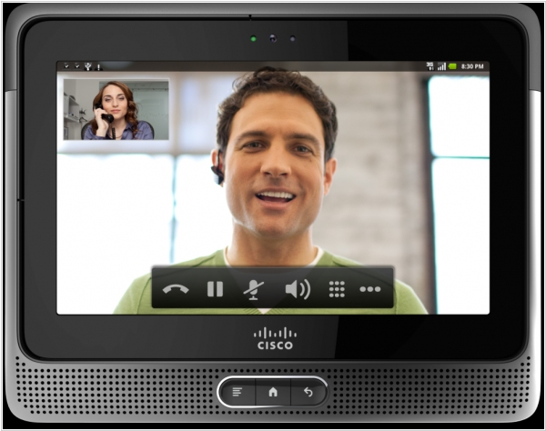

Видеоконференция в локальной сети

Локальная видеоконференция – надежное и эффективное средство проведения различных мероприятий, предполагающих удаленное участие собеседников. Так, видеоконференция в локальной сети широко используется на крупных коммерческих предприятиях – для проведения совещаний с участием руководителей территориально разнесенных подразделений компании, в судебных учреждениях – для реализации судебных процессов с дистанционным участием подсудимых, в медицине – для дистанционной диагностики пациентов, в образовательных заведениях – для дистанционного обучения и т. п. С помощью локальной видеоконференции Вы можете не только одновременно общаться с большим количеством собеседников, но и демонстрировать им компьютерные файлы, распечатанные бумажные копии документов, вещи, окружающую обстановку и т. д. Таким образом, программа видеоконференции в локальной сети может быть достаточно обширной и многогранной и в большинстве ситуаций демонстрирует ощутимые преимущества перед другими видами связи. Но это лишь в том случае, если при внедрении системы видеоконференцсвязи не допускать «самодеятельности», всецело полагаясь на опыт квалифицированных специалистов в области создания информационных систем.
Видеоконференция в локальной сети и преимущества ее организацииВ большинстве случаев локальная видеоконференция приносит как государственным, так и коммерческим структурам, реально ощутимый прогресс в реализации основных рабочих процессов, а именно:
- снижает время на переезды и командировки для проведения переговоров и совещаний и связанные с ними материальные расходы
- ускоряет процессы взаимодействия с коллегами, подчиненными, экспертами
- сокращает время принятия решений в чрезвычайных ситуациях
- увеличивает производительность труда
- повышает эффективность распределения ресурсов организации и др.
Видеоконференция в локальной сети может быть основана на существующей локальной сети предприятия, однако для общения в режиме видеоконференции потребуется введение такого специфического оборудования, как терминал видеоконференции, IP-камеры, микрофоны и др. В качестве терминала или, другими словами, устройства кодека, обеспечивающего отображение информации и воспроизведение звука, можно рассматривать персональный компьютер, в качестве транспортной среды обычно выступают сетевые протоколы IP или ISDN, а специальная программа видеоконференции в локальной сети обеспечивает настройку необходимого функционала системы.
Локальная видеоконференция может осуществляться в двух режимах. Первый – наиболее примитивный – представляет собой установление связи по принципу «точка-точка», и удовлетворяет потребности в конференцсвязи лишь на начальном этапе внедрения данной технологии на объекте, поскольку обеспечивает общение всего лишь двух абонентов. Ведь, как известно, аппетит приходит во время еды, а посему второй – многоточечный – вариант организации видеоконференцсвязи пользуется значительно большим спросом. Для реализации многосторонней локальной видеоконференцсвязи необходимо активировать в кодеке многоточечную лицензию либо установить в центре управления специальный видеосервер.
Оборудование для локальных видеоконференций также во многих случаях интегрируется в другие интеллектуальные системы здания – например, видеонаблюдение, оповещение, освещение, охранно-пожарная сигнализация, способствуя организации более совершенной системы безопасности и ускорению принятия решений в чрезвычайных ситуациях.